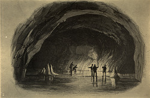
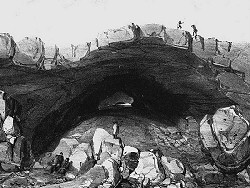

Surtshellir-Stefánshellir system
Surtshellir - Stefánshellir - Íshellir
Useful Information
| Location: |
approx. 8km NE of Kalmanstunga. From Reykjavík take road No. 1, 20km, after Borgarnes turn right to No. 50, then take No. 580. After you passed the Hraunfossar waterfalls (near Húsafell) and road F35 (Kaldidalur) turn right again at the farm Kalmanstunga. Follow rough track (4WD necessary) up to the lavafield Hallmundahraun and follow the signs Íshellir, Surtshellir, Stefánshellir. |
| Classification: |
|
| Light: | none. |
| Dimension: |
Íshellir: L=500m (approx.), T=0°C. Surtshellir: L=1,970m, VR=37m, T=2-5°C. Stefánshellir: L=1,520m, T=2-5°C. |
| Guided tours: | - |
| Photography: | |
| Accessibility: | |
| Bibliography: |
Michael Laumanns (1987):
Die Höhlen Islands,
Mitt. Verb. dt. Höhlen- u. Karstforscher, 33 (1), pp 4-15. Shepton Mallet Caving Club Journal Series, 10 (10), pp 410-411. |
| Address: | |
| As far as we know this information was accurate when it was published (see years in brackets), but may have changed since then. Please check rates and details directly with the companies in question if you need more recent info. | |
| Last update: | $Date: 2015/11/20 13:20:43 $ |
History
| 1679 | first described by Arngrim. |
Description
|  |
| Image: view of Surtshellir. From the book Natural Phenomenon, no author, London 1849. |
|  |
| Image: 18th century engraving. |
Surtshellir translates to Fire Giants Cave, which gives a first impression of the way, this cave was formed. It is the result of an lava flow about 1000 years ago.
Surtshellir was first described by Arngrim in 1679. From this time on, until the end of the 19th century, it was the longest known lava tube of the world. In the early years of scientific cave research, it was also the only known lava tube. This is the reason, why it is the most wellknown Icelandic cave.
Íshellir is a part of the Surtshellir system with very impressive ice formations. In the winter cold air falls down into the cave. In spring, when the snow on the surface starts to melt, water penetrates into the cave and - as the temperature in the cave is still below 0°C - freezes to ice stalactites and stalagmites.
All three caves are parts of the same lava tube, formed by the same lava flow. But at some locations the roof collapsed completely and thus left three pieces, which are not connected any more. In speleology, a cave system is defined as all cave passages which are connected. The three caves do not really fulfill this definition, but the geologic connection is so obvious, that we can talk of a single cave system. However, the addition of all cave lengths for statistical reasons is not correct.
These caves are now a regular tourist attraction. Bring your own lights and wear waterproof clothes and good boots.
Íshellir is the entrance most tourists use. A descent down a boulder slope leads to an extensive ice lake which in 2001 was 30 cm deep in water. Beyond the lake, ice formations abound for some distance, abruptly stopping at an ascent over boulders, where it is necessary to stoop. Beyond the boulders the passage becomes large and muddy. After a large chamber and a couple of short inlet tubes on the right the passage degenerates to a crawl and eventually ends in a complete lava seal.
Up flow from the Íshellir entrance Surtshellir continues in a very impressive style, generally in the form of a 10-15m diameter tube Much of the passage is liberally scattered with boulders make the going difficult. There are many karst windows, but none are suitable for access without caving ladders. Eventually the cave ends in a collapse which separates Surtshellir from Stefánshellir.
Text by Tony Oldham (2002). With kind permission.
 Search Google for "Surtshellir, Stefánshellir, Íshellir"
Search Google for "Surtshellir, Stefánshellir, Íshellir" Google Earth Placemark
Google Earth Placemark Surtshellir und Hraunfossar
(
Surtshellir und Hraunfossar
({kind=link}
{kind=link}